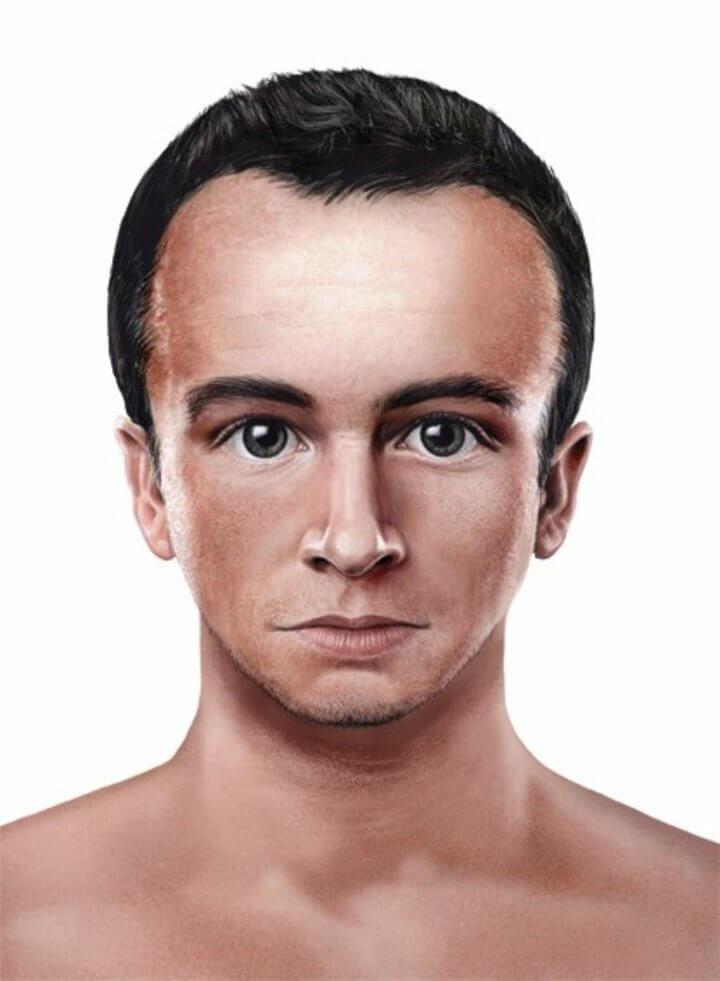
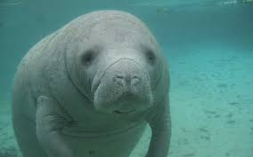
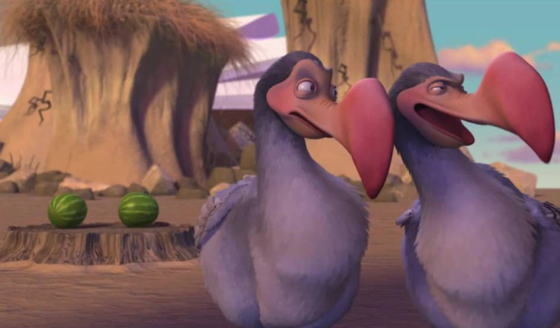
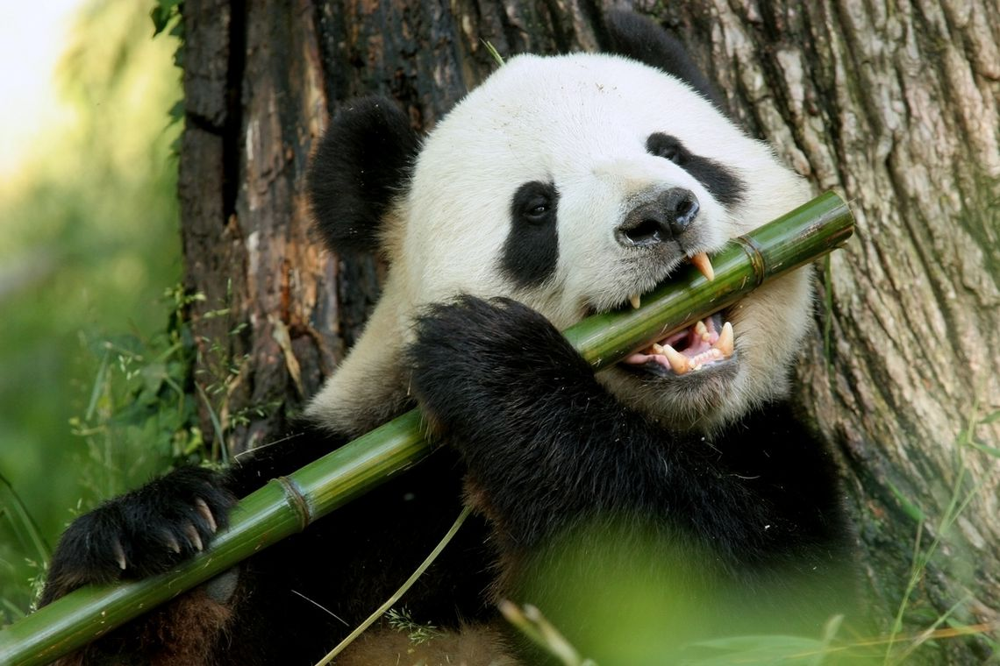
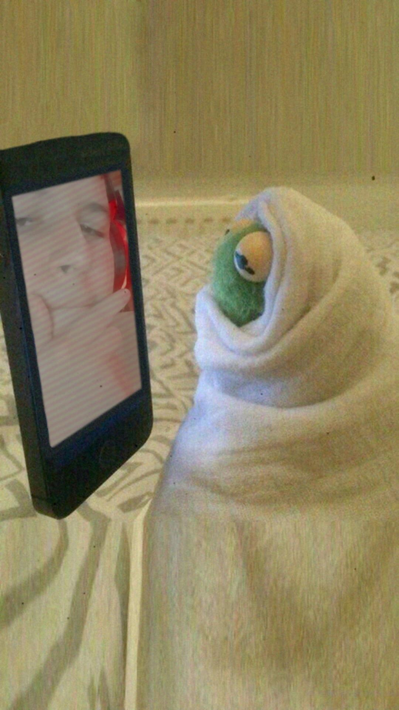

El animal mas bobo que existe
No todos podemos tener el mismo pensamiento del cual es el animal mas bobo que existe en nuestro planeta, unos dicen que es el Manantí, otros que las Iguanas y más. El listado encabeza por una especie que sin duda es una de las mas bobas que existen.
- Los Humanos
- El Manantí
- El Dodo
- El Oso Panda
- Yo:)

No todos.
En la naturaleza salvaje no urbana, no hay animales idiotas, su especie no sobreviviria, todo comportamiento aunque
en algunos experimentos parezca idiota, no lo es, obedece a su inteligencia, y adaptabilidad.
En la naturaleza salvaje urbana, hay bastantes idiotas.
Miren a los políticos, son idiotas, o no son idiotas?
No todos claro, pero la idiotez en muchos es evidente.
La civilización también es naturaleza salvaje.
Una ciudad es como una jungla de concreto y otros materiales, donde también el salvajismo está presente y sobre
todo la idiotez.
No en todos.

Algunas de las personas consideran el Mnantí como uno de los animales mas bobos que existen.
Es como una vaca. Una vaca algo boba que no escapa rápidamente de las amenazas. Lo triste es que adoro a
los manatíes, pero me gustaría que se avivaran un poco y aprendieran a defenderse mejor del ambiente
hostil para ellos que los humanos hemos generado.

El dodo, que no podía volar y se extinguió por culpa de la humanidad, pero bueno, el pobre tenía cerebro de
pájaro y llevaba quién sabe cuántos siglos con esas alitas de morondanga, dado que llevaba quién sabe cuánto
tiempo arreglándoselas así.

Los osos panda, a pesar de tener una dentición y sistema digestivo totalmente carnivoro, se alimentan casi
exclusivamente de brotes de bambú, del que obtienen poca energia, lo que les obliga a pasar muchas horas
comiendo y ser poco activos.

Cada persona tiene su punto de vista diferente, Pero lo que si estamos de acuerdo es que el animal mas bobo
que existe en este planeta es DUQUE HPT@.

Gracias por leer y te dejo este temazo para que la pases bien:)